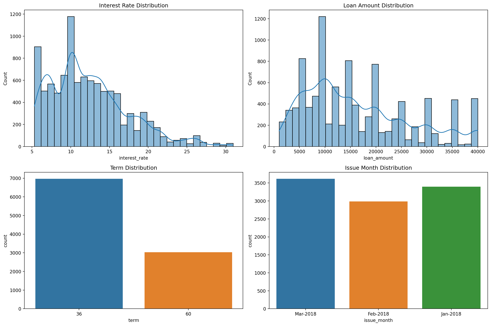

import pandas as pd
import numpy as np
import matplotlib.pyplot as plt
import seaborn as sns
from sklearn.linear_model import LinearRegression
from sklearn.metrics import mean_squared_error
import statsmodels.api as sm
loans = pd.read_csv('data/loans_full_schema.csv')AE 11: Modelling loan interest rates
Suggested answers
Application exercise
Answers
In this application exercise we will be studying loan interest rates. The dataset is one you’ve come across before in your reading – the dataset about loans from the peer-to-peer lender, Lending Club, from the openintro R package. We will use pandas and scikit-learn for data exploration and modeling, respectively.
Before we use the dataset, we’ll make a few transformations to it.
- Your turn: Review the code below and write a summary of the data transformation pipeline.
Calculate Credit Utilization:
- A new column
credit_utilis created by dividing thetotal_credit_utilizedby thetotal_credit_limit.
- A new column
Transform Bankruptcy Indicator:
- The
public_record_bankruptcolumn is converted into a binary categorical columnbankruptcy, where0remains0and any other value is converted to1.
- The
Convert Verified Income to Category:
- The
verified_incomecolumn is converted to a categorical data type.
- The
Format and Order Homeownership:
The
homeownershipcolumn is formatted to have title case (capitalizing the first letter of each word) and is converted to a categorical data type.The
homeownershipcategories are ordered as “Rent”, “Mortgage”, and “Own”.
Rename Column:
- The column
inquiries_last_12mis renamed tocredit_checks.
- The column
Select Relevant Columns:
- The dataset is filtered to keep only the columns
interest_rate,loan_amount,verified_income,debt_to_income,credit_util,bankruptcy,term,credit_checks,issue_month, andhomeownership.
- The dataset is filtered to keep only the columns
loans['credit_util'] = loans['total_credit_utilized'] / loans['total_credit_limit']
loans['bankruptcy'] = loans['public_record_bankrupt'].apply(lambda x: 0 if x == 0 else 1).astype('category')
loans['verified_income'] = loans['verified_income'].astype('category')
loans['homeownership'] = loans['homeownership'].str.title().astype('category')
loans['homeownership'] = pd.Categorical(loans['homeownership'], categories=["Rent", "Mortgage", "Own"], ordered=True)
loans = loans.rename(columns={'inquiries_last_12m': 'credit_checks'})
loans = loans[['interest_rate', 'loan_amount', 'verified_income', 'debt_to_income', 'credit_util', 'bankruptcy', 'term', 'credit_checks', 'issue_month', 'homeownership']]Here is a glimpse at the data:
print(loans.info())
print(loans.describe())<class 'pandas.core.frame.DataFrame'>
RangeIndex: 10000 entries, 0 to 9999
Data columns (total 10 columns):
# Column Non-Null Count Dtype
--- ------ -------------- -----
0 interest_rate 10000 non-null float64
1 loan_amount 10000 non-null int64
2 verified_income 10000 non-null category
3 debt_to_income 9976 non-null float64
4 credit_util 9998 non-null float64
5 bankruptcy 10000 non-null category
6 term 10000 non-null int64
7 credit_checks 10000 non-null int64
8 issue_month 10000 non-null object
9 homeownership 10000 non-null category
dtypes: category(3), float64(3), int64(3), object(1)
memory usage: 576.7+ KB
None
interest_rate loan_amount debt_to_income credit_util term \
count 10000.000000 10000.000000 9976.000000 9998.000000 10000.000000
mean 12.427524 16361.922500 19.308192 0.403158 43.272000
std 5.001105 10301.956759 15.004851 0.269313 11.029877
min 5.310000 1000.000000 0.000000 0.000000 36.000000
25% 9.430000 8000.000000 11.057500 0.169029 36.000000
50% 11.980000 14500.000000 17.570000 0.360192 36.000000
75% 15.050000 24000.000000 25.002500 0.607317 60.000000
max 30.940000 40000.000000 469.090000 1.835280 60.000000
credit_checks
count 10000.00000
mean 1.95820
std 2.38013
min 0.00000
25% 0.00000
50% 1.00000
75% 3.00000
max 29.00000 Get to know the data
- Your turn: What is a typical interest rate in this dataset? What are some attributes of a typical loan and a typical borrower. Give yourself no more than 5 minutes for this exploration and share 1-2 findings.
fig, axs = plt.subplots(2, 2, figsize=(15, 10))
sns.histplot(loans['interest_rate'], bins=30, kde=True, ax=axs[0, 0])
axs[0, 0].set_title('Interest Rate Distribution')
sns.histplot(loans['loan_amount'], bins=30, kde=True, ax=axs[0, 1])
axs[0, 1].set_title('Loan Amount Distribution')
sns.countplot(x='term', data=loans, ax=axs[1, 0])
axs[1, 0].set_title('Term Distribution')
sns.countplot(x='issue_month', data=loans, ax=axs[1, 1])
axs[1, 1].set_title('Issue Month Distribution')
plt.tight_layout()
plt.show()
fig, axs = plt.subplots(3, 2, figsize=(15, 15))
sns.histplot(loans['credit_util'], bins=30, kde=True, ax=axs[0, 0])
axs[0, 0].set_title('Credit Utilization Distribution')
sns.countplot(x='verified_income', data=loans, ax=axs[0, 1])
axs[0, 1].set_title('Verified Income Distribution')
sns.histplot(loans['debt_to_income'], bins=30, kde=True, ax=axs[1, 0])
axs[1, 0].set_title('Debt to Income Distribution')
sns.countplot(x='bankruptcy', data=loans, ax=axs[1, 1])
axs[1, 1].set_title('Bankruptcy Distribution')
sns.countplot(x='credit_checks', data=loans, ax=axs[2, 0])
axs[2, 0].set_title('Credit Checks Distribution')
sns.countplot(x='homeownership', data=loans, ax=axs[2, 1])
axs[2, 1].set_title('Homeownership Distribution')
plt.tight_layout()
plt.show()
Interest rate vs. credit utilization ratio
Python does not encode categories or handle missing values for you. Linear regression models are incapable of handling either, so we will need to use one-hot encoding to encode categories and drop missing values.
Hint: Python also does not convert the one-hot encoded values to numerics… so we must do this as well.
X = loans[['credit_util', 'homeownership']]
X = pd.get_dummies(X, drop_first=True)
X = X.dropna()
X = X.replace([np.inf, -np.inf], np.nan).dropna()
X = X.astype(float)
y = loans.loc[X.index, 'interest_rate']
y = y.dropna()The regression model for interest rate vs. credit utilization is as follows.
X = sm.add_constant(X)
model = sm.OLS(y, X).fit()
print(model.summary2()) Results: Ordinary least squares
=====================================================================
Model: OLS Adj. R-squared: 0.068
Dependent Variable: interest_rate AIC: 59859.3779
Date: 2024-07-28 15:34 BIC: 59888.2185
No. Observations: 9998 Log-Likelihood: -29926.
Df Model: 3 F-statistic: 243.7
Df Residuals: 9994 Prob (F-statistic): 1.25e-152
R-squared: 0.068 Scale: 23.309
---------------------------------------------------------------------
Coef. Std.Err. t P>|t| [0.025 0.975]
---------------------------------------------------------------------
const 9.9250 0.1401 70.8498 0.0000 9.6504 10.1996
credit_util 5.3356 0.2074 25.7266 0.0000 4.9291 5.7421
homeownership_Mortgage 0.6956 0.1208 5.7590 0.0000 0.4588 0.9323
homeownership_Own 0.1283 0.1552 0.8266 0.4085 -0.1760 0.4326
---------------------------------------------------------------------
Omnibus: 1150.070 Durbin-Watson: 1.981
Prob(Omnibus): 0.000 Jarque-Bera (JB): 1616.376
Skew: 0.900 Prob(JB): 0.000
Kurtosis: 3.800 Condition No.: 6
=====================================================================
Notes:
[1] Standard Errors assume that the covariance matrix of the errors
is correctly specified.And here is the model visualized:
sns.scatterplot(x='credit_util', y='interest_rate', data=loans, alpha=0.5)
sns.lineplot(x=loans['credit_util'], y=model.predict(X), color='red')
plt.xlabel('Credit Utilization')
plt.ylabel('Interest Rate')
plt.title('Interest Rate vs. Credit Utilization')
plt.show()
- Your turn: Interpret the intercept and the slope.
Intercept: Borrowers with 0 credit utilization are predicted, on average, to get an interest rate of 10.5%.
Slope: For each additional point credit utilization is higher, interest rate is predicted to be higher, on average, by 4.73%.
Interest rate vs. homeownership
Next we predict interest rates from homeownership, which is a categorical predictor with three levels:
homeownership_levels = loans['homeownership'].cat.categories
print(homeownership_levels)Index(['Rent', 'Mortgage', 'Own'], dtype='object')- Demo: Fit the linear regression model to predict interest rate from homeownership and display a summary of the model. Write the estimated model output below.
X = pd.get_dummies(loans['homeownership'], drop_first=True)
X = X.astype(float)
X = sm.add_constant(X)
y = loans['interest_rate']
model = sm.OLS(y, X).fit()
print(model.summary2()) Results: Ordinary least squares
===================================================================
Model: OLS Adj. R-squared: 0.006
Dependent Variable: interest_rate AIC: 60511.8415
Date: 2024-07-28 15:34 BIC: 60533.4726
No. Observations: 10000 Log-Likelihood: -30253.
Df Model: 2 F-statistic: 32.65
Df Residuals: 9997 Prob (F-statistic): 7.35e-15
R-squared: 0.006 Scale: 24.854
---------------------------------------------------------------------
Coef. Std.Err. t P>|t| [0.025 0.975]
---------------------------------------------------------------------
const 12.9250 0.0803 161.0329 0.0000 12.7676 13.0823
Mortgage -0.8661 0.1079 -8.0304 0.0000 -1.0775 -0.6547
Own -0.6110 0.1575 -3.8788 0.0001 -0.9197 -0.3022
-------------------------------------------------------------------
Omnibus: 1045.136 Durbin-Watson: 1.990
Prob(Omnibus): 0.000 Jarque-Bera (JB): 1408.154
Skew: 0.866 Prob(JB): 0.000
Kurtosis: 3.615 Condition No.: 4
===================================================================
Notes:
[1] Standard Errors assume that the covariance matrix of the errors
is correctly specified.Your turn: Interpret each coefficient in context of the problem.
Intercept: Loan applicants who rent are predicted to receive an interest rate of 12.9%, on average.
Slopes:
The model predicts that loan applicants who have a mortgage for their home receive 0.866% lower interest rate than those who rent their home, on average.
The model predicts that loan applicants who own their home receive 0.611% lower interest rate than those who rent their home, on average.
Interest rate vs. credit utilization and homeownership
Main effects model
- Demo: Fit a model to predict interest rate from credit utilization and homeownership, without an interaction effect between the two predictors. Display the summary output and write out the estimated regression equation.
X = loans[['credit_util']].join(pd.get_dummies(loans['homeownership'], drop_first=True)).astype(float)
X = sm.add_constant(X)
y = loans['interest_rate']
data = pd.concat([X, y], axis=1)
data = data.replace([np.inf, -np.inf], np.nan).dropna()
X = data.drop(columns='interest_rate')
y = data['interest_rate']
main_effects_model = sm.OLS(y, X).fit()
print(model.summary2()) Results: Ordinary least squares
===================================================================
Model: OLS Adj. R-squared: 0.006
Dependent Variable: interest_rate AIC: 60511.8415
Date: 2024-07-28 15:34 BIC: 60533.4726
No. Observations: 10000 Log-Likelihood: -30253.
Df Model: 2 F-statistic: 32.65
Df Residuals: 9997 Prob (F-statistic): 7.35e-15
R-squared: 0.006 Scale: 24.854
---------------------------------------------------------------------
Coef. Std.Err. t P>|t| [0.025 0.975]
---------------------------------------------------------------------
const 12.9250 0.0803 161.0329 0.0000 12.7676 13.0823
Mortgage -0.8661 0.1079 -8.0304 0.0000 -1.0775 -0.6547
Own -0.6110 0.1575 -3.8788 0.0001 -0.9197 -0.3022
-------------------------------------------------------------------
Omnibus: 1045.136 Durbin-Watson: 1.990
Prob(Omnibus): 0.000 Jarque-Bera (JB): 1408.154
Skew: 0.866 Prob(JB): 0.000
Kurtosis: 3.615 Condition No.: 4
===================================================================
Notes:
[1] Standard Errors assume that the covariance matrix of the errors
is correctly specified.\[ \widehat{interest~rate} = 9.93 + 5.34 \times credit~util + 0.696 \times Mortgage + 0.128 \times Own \]
- Demo: Write the estimated regression equation for loan applications from each of the homeownership groups separately.
- Rent: \(\widehat{interest~rate} = 9.93 + 5.34 \times credit~util\)
- Mortgage: \(\widehat{interest~rate} = 10.626 + 5.34 \times credit~util\)
- Own: \(\widehat{interest~rate} = 10.058 + 5.34 \times credit~util\)
- Question: How does the model predict the interest rate to vary as credit utilization varies for loan applicants with different homeownership status. Are the rates the same or different?
The same.
Interaction effects model
- Demo: Fit a model to predict interest rate from credit utilization and homeownership, with an interaction effect between the two predictors. Display the summary output and write out the estimated regression equation.
X = loans[['credit_util']].join(pd.get_dummies(loans['homeownership'], drop_first=True)).astype(float)
X['credit_util_Mortgage'] = X['credit_util'] * X['Mortgage']
X['credit_util_Own'] = X['credit_util'] * X['Own']
X = sm.add_constant(X)
y = loans['interest_rate']
data = pd.concat([X, y], axis=1)
data = data.replace([np.inf, -np.inf], np.nan).dropna()
X = data.drop(columns='interest_rate')
y = data['interest_rate']
interaction_model = sm.OLS(y, X).fit()
print(model.summary2()) Results: Ordinary least squares
===================================================================
Model: OLS Adj. R-squared: 0.006
Dependent Variable: interest_rate AIC: 60511.8415
Date: 2024-07-28 15:34 BIC: 60533.4726
No. Observations: 10000 Log-Likelihood: -30253.
Df Model: 2 F-statistic: 32.65
Df Residuals: 9997 Prob (F-statistic): 7.35e-15
R-squared: 0.006 Scale: 24.854
---------------------------------------------------------------------
Coef. Std.Err. t P>|t| [0.025 0.975]
---------------------------------------------------------------------
const 12.9250 0.0803 161.0329 0.0000 12.7676 13.0823
Mortgage -0.8661 0.1079 -8.0304 0.0000 -1.0775 -0.6547
Own -0.6110 0.1575 -3.8788 0.0001 -0.9197 -0.3022
-------------------------------------------------------------------
Omnibus: 1045.136 Durbin-Watson: 1.990
Prob(Omnibus): 0.000 Jarque-Bera (JB): 1408.154
Skew: 0.866 Prob(JB): 0.000
Kurtosis: 3.615 Condition No.: 4
===================================================================
Notes:
[1] Standard Errors assume that the covariance matrix of the errors
is correctly specified.\[ \widehat{interest~rate} = 9.44 + 6.20 \times credit~util + 1.39 \times Mortgage + 0.697 \times Own - 1.64 \times credit_util:Mortgage - 1.06 \times credit_util:Own \]
- Demo: Write the estimated regression equation for loan applications from each of the homeownership groups separately.
- Rent: \(\widehat{interest~rate} = 9.44 + 6.20 \times credit~util\)
- Mortgage: \(\widehat{interest~rate} = 10.83 + 4.56 \times credit~util\)
- Own: \(\widehat{interest~rate} = 10.137 + 5.14 \times credit~util\)
- Question: How does the model predict the interest rate to vary as credit utilization varies for loan applicants with different homeownership status. Are the rates the same or different?
Different.
Choosing a model
Rule of thumb: Occam’s Razor - Don’t overcomplicate the situation! We prefer the simplest best model.
print(main_effects_model.summary2())
print(interaction_model.summary2())
print("Main Effects Model Adjusted R-squared:", main_effects_model.rsquared_adj)
print("Interaction Effects Model Adjusted R-squared:", interaction_model.rsquared_adj) Results: Ordinary least squares
===================================================================
Model: OLS Adj. R-squared: 0.068
Dependent Variable: interest_rate AIC: 59859.3779
Date: 2024-07-28 15:34 BIC: 59888.2185
No. Observations: 9998 Log-Likelihood: -29926.
Df Model: 3 F-statistic: 243.7
Df Residuals: 9994 Prob (F-statistic): 1.25e-152
R-squared: 0.068 Scale: 23.309
--------------------------------------------------------------------
Coef. Std.Err. t P>|t| [0.025 0.975]
--------------------------------------------------------------------
const 9.9250 0.1401 70.8498 0.0000 9.6504 10.1996
credit_util 5.3356 0.2074 25.7266 0.0000 4.9291 5.7421
Mortgage 0.6956 0.1208 5.7590 0.0000 0.4588 0.9323
Own 0.1283 0.1552 0.8266 0.4085 -0.1760 0.4326
-------------------------------------------------------------------
Omnibus: 1150.070 Durbin-Watson: 1.981
Prob(Omnibus): 0.000 Jarque-Bera (JB): 1616.376
Skew: 0.900 Prob(JB): 0.000
Kurtosis: 3.800 Condition No.: 6
===================================================================
Notes:
[1] Standard Errors assume that the covariance matrix of the errors
is correctly specified.
Results: Ordinary least squares
====================================================================
Model: OLS Adj. R-squared: 0.069
Dependent Variable: interest_rate AIC: 59850.4002
Date: 2024-07-28 15:34 BIC: 59893.6611
No. Observations: 9998 Log-Likelihood: -29919.
Df Model: 5 F-statistic: 149.0
Df Residuals: 9992 Prob (F-statistic): 4.79e-153
R-squared: 0.069 Scale: 23.284
--------------------------------------------------------------------
Coef. Std.Err. t P>|t| [0.025 0.975]
--------------------------------------------------------------------
const 9.4369 0.1986 47.5256 0.0000 9.0477 9.8261
credit_util 6.2043 0.3252 19.0774 0.0000 5.5668 6.8418
Mortgage 1.3903 0.2276 6.1092 0.0000 0.9442 1.8364
Own 0.6972 0.3163 2.2040 0.0275 0.0771 1.3173
credit_util_Mortgage -1.6354 0.4572 -3.5771 0.0003 -2.5315 -0.7392
credit_util_Own -1.0594 0.5896 -1.7967 0.0724 -2.2152 0.0964
--------------------------------------------------------------------
Omnibus: 1157.460 Durbin-Watson: 1.984
Prob(Omnibus): 0.000 Jarque-Bera (JB): 1630.777
Skew: 0.903 Prob(JB): 0.000
Kurtosis: 3.808 Condition No.: 19
====================================================================
Notes:
[1] Standard Errors assume that the covariance matrix of the errors
is correctly specified.
Main Effects Model Adjusted R-squared: 0.06788934875258668
Interaction Effects Model Adjusted R-squared: 0.06891213837091503- Review: What is R-squared? What is adjusted R-squared?
R-squared is the percent variability in the response that is explained by our model. (Can use when models have same number of variables for model selection)
Adjusted R-squared is similar, but has a penalty for the number of variables in the model. (Should use for model selection when models have different numbers of variables).
- Question: Based on the adjusted \(R^2\)s of these two models, which one do we prefer?
The interaction effects model, though just barely.
Another model to consider
- Your turn: Let’s add one more model to the variable – issue month. Should we add this variable to the interaction effects model from earlier?
X = loans[['credit_util']].join(pd.get_dummies(loans['homeownership'], drop_first=True)).join(pd.get_dummies(loans['issue_month'], drop_first=True)).astype(float)
X['credit_util_Mortgage'] = X['credit_util'] * X['Mortgage']
X['credit_util_Own'] = X['credit_util'] * X['Own']
X = sm.add_constant(X)
y = loans['interest_rate']
data = pd.concat([X, y], axis=1)
data = data.replace([np.inf, -np.inf], np.nan).dropna()
X = data.drop(columns='interest_rate')
y = data['interest_rate']
new_model = sm.OLS(y, X).fit()
print(new_model.summary2())
print("New Model Adjusted R-squared:", new_model.rsquared_adj) Results: Ordinary least squares
====================================================================
Model: OLS Adj. R-squared: 0.069
Dependent Variable: interest_rate AIC: 59853.9136
Date: 2024-07-28 15:34 BIC: 59911.5948
No. Observations: 9998 Log-Likelihood: -29919.
Df Model: 7 F-statistic: 106.5
Df Residuals: 9990 Prob (F-statistic): 5.62e-151
R-squared: 0.069 Scale: 23.287
--------------------------------------------------------------------
Coef. Std.Err. t P>|t| [0.025 0.975]
--------------------------------------------------------------------
const 9.4870 0.2115 44.8607 0.0000 9.0725 9.9016
credit_util 6.2043 0.3253 19.0748 0.0000 5.5667 6.8419
Mortgage 1.3921 0.2276 6.1154 0.0000 0.9459 1.8384
Own 0.7000 0.3164 2.2124 0.0270 0.0798 1.3202
Jan-2018 -0.0799 0.1211 -0.6600 0.5093 -0.3173 0.1574
Mar-2018 -0.0651 0.1194 -0.5456 0.5854 -0.2991 0.1688
credit_util_Mortgage -1.6384 0.4573 -3.5827 0.0003 -2.5348 -0.7420
credit_util_Own -1.0646 0.5897 -1.8052 0.0711 -2.2205 0.0914
--------------------------------------------------------------------
Omnibus: 1157.710 Durbin-Watson: 1.984
Prob(Omnibus): 0.000 Jarque-Bera (JB): 1631.442
Skew: 0.903 Prob(JB): 0.000
Kurtosis: 3.809 Condition No.: 21
====================================================================
Notes:
[1] Standard Errors assume that the covariance matrix of the errors
is correctly specified.
New Model Adjusted R-squared: 0.06877105698580799No, the adjusted R-squared goes down.